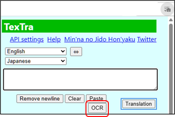
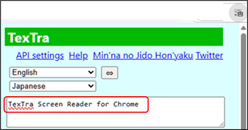

Usage
After installing this app
and launching it to complete the initial setup,
push the OCR button on
TexTra
Chrome.

The
screen will dim.
Drag the mouse to select the area containing the text
you want to
capture.

The
text within the selected area will be loaded into TexTra
Chrome.
